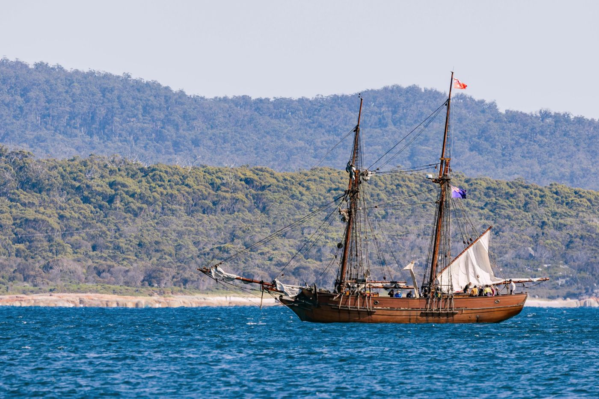

El regreso de Ulises

Diez años de guerra han terminado y Troya arde a tus espaldas. Eres Ulises, rey de Ítaca, y tu única meta es volver a casa, con Penélope y con Telémaco. Pero los dioses no olvidan, y Poseidón vigila el mar.
Tu primera decisión
El viento te lleva hasta dos costas desconocidas. ¿Dónde amarras la nave?